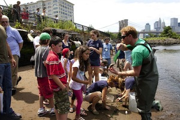
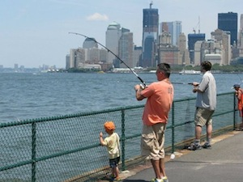
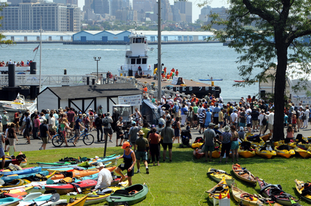

About MWA
Metropolitan Waterfront Alliance: A catalyst for realizing a powerful,shared vision of the metropolitan waterways
Mission Statement: The Metropolitan Waterfront Alliance works to transform the New York and New Jersey Harbor and Waterways to make them cleaner and more accessible, a vibrant place to play, learn and work with great parks, great jobs and great transportation for all.
The Metropolitan Waterfront Alliance was started as a project of the Municipal Art Society of New York in 2000 to capitalize on opportunities whose outcomes would have considerable repercussions for the waterfront. Critical land use, regulatory, and environmental decisions being made in this decade will determine how the New York metropolitan area will look and function for years to come, and how future generations are able to access the water and enjoy this great resource that is literally at our doorsteps.
The Waterfront Alliance is the voice of over 620 organizations with ties to our regional waterways. Together we are working to transform the waters of New York and New Jersey Harbor into clean and accessible places to learn, work and play, with inviting parks, dependable jobs and reliable, eco-friendly transportation.
Its goal nothing less than transformation of the entire region by reimagining its harbor, the MWA continues to conduct research, publish influential reports and produce well-attended conferences. The MWA can pull off blockbuster entertainment (delighting 25,000+ people with City of Water Day) and yet focus on detailed projects important to single neighborhoods (building and installing sturdy Eco-Docks around New York City and working for regulatory reform).
As MWA helps people understand the multi-layered significance of our waterfront, the job has expanded to include crucial advocacy for funding and implementation. Over the next several years, MWA will lobby elected officials for New York Harbor s fair share of government dollars, work to streamline the waterfront permitting process, and track progress on waterfront initiatives by holding stakeholders accountable to benchmarks.
- What You Can Do
- Donate
- Take Action
- Join The Alliance